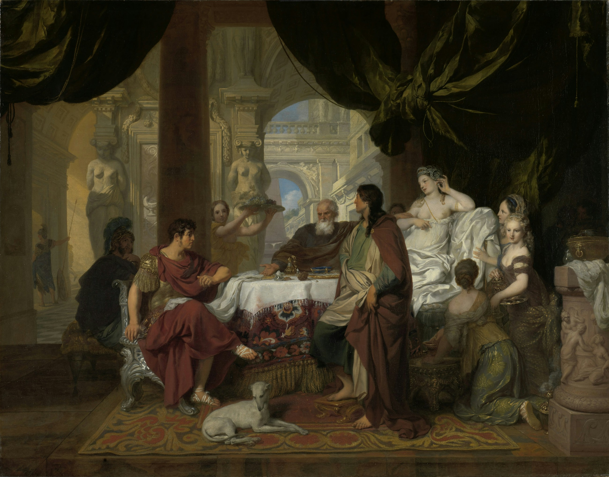

Arte
El arte (del latín ars, artis, y este calco del griego τέχνη, téchnē) es entendido generalmente como cualquier actividad o producto realizado con una finalidad estética y también comunicativa, mediante la cual se expresan ideas, emociones y, en general, una visión del mundo, a través de diversos recursos, como los plásticos, lingüísticos, sonoros, corporales y mixtos. El arte es un componente de la cultura, reflejando en su concepción las bases económicas y sociales, y la transmisión de ideas y valores, inherentes a cualquier cultura humana a lo largo del espacio y el tiempo. Se suele considerar que con la aparición del Homo sapiens el arte tuvo en principio una función ritual, mágica o religiosa (arte paleolítico), pero esa función cambió con la evolución del ser humano, adquiriendo un componente estético y una función social, pedagógica, mercantil o simplemente ornamental.
La noción de arte continúa sujeta a profundas disputas, dado que su definición está abierta a múltiples interpretaciones, que varían según la cultura, la época, el movimiento, o la sociedad para la cual el término tiene un determinado sentido. El vocablo ‘arte’ tiene una extensa acepción, pudiendo designar cualquier actividad humana hecha con esmero y dedicación, o cualquier conjunto de reglas necesarias para desarrollar de forma óptima una actividad: se habla así de “arte culinario”, “arte médico”, “artes marciales”, “artes de arrastre” en la pesca, etc. En ese sentido, arte es sinónimo de capacidad, habilidad, talento, experiencia. Sin embargo, más comúnmente se suele considerar al arte como una actividad creadora del ser humano, por la cual produce una serie de objetos (obras de arte) que son singulares, y cuya finalidad es principalmente estética. En ese contexto, arte sería la generalización de un concepto expresado desde antaño como “bellas artes”, actualmente algo en desuso y reducido a ámbitos académicos y administrativos. De igual forma, el empleo de la palabra arte para designar la realización de otras actividades ha venido siendo sustituido por términos como ‘técnica’ u ‘oficio’. En este artículo se trata de arte entendido como un medio de expresión humano de carácter creativo.
Concepto
La definición de arte es abierta, subjetiva y discutible. No existe un acuerdo unánime entre historiadores, filósofos o artistas. A lo largo del tiempo se han dado numerosas definiciones de arte, entre ellas: «el arte es el recto ordenamiento de la razón» (Tomás de Aquino); «el arte es aquello que establece su propia regla» (Schiller); «el arte es el estilo» (Max Dvořák); «el arte es expresión de la sociedad» (John Ruskin); «el arte es la libertad del genio» (Adolf Loos); «el arte es la idea» (Marcel Duchamp); «el arte es la novedad» (Jean Dubuffet); «el arte es la acción, la vida» (Joseph Beuys); «arte es todo aquello que los hombres llaman arte» (Dino Formaggio); «el arte es la mentira que nos ayuda a ver la verdad» (Pablo Picasso); «arte es vida, vida es arte» (Wolf Vostell); «Arte es el recurso natural para la intuición de la elegancia como garantía de supervivencia» Ibo Bonilla.

El concepto ha ido variando con el paso del tiempo: hasta el Renacimiento, solo las artes liberales eran consideradas arte; la arquitectura, la escultura y la pintura eran consideradas “manualidades”. El arte ha sido desde siempre uno de los principales medios de expresión del ser humano, a través del cual manifiesta sus ideas y sentimientos, la forma como se relaciona con el mundo. Su función puede variar desde la más práctica hasta la más ornamental, puede tener un contenido religioso o simplemente estético, puede ser duradero o efímero. En el siglo xx se pierde incluso el sustrato material: decía Beuys que la vida es un medio de expresión artística, destacando el aspecto vital, la acción. En un contexto más amplio y contemporáneo, el escultor, arquitecto y matemático Ibo Bonilla, plantea el concepto como una parte indisoluble de la triada y ecuación: “ ética + estética + arte = 1”, donde la intuición de la elegancia, como capacidad de elegir, es el ingrediente natural para la supervivencia. Así, todo el mundo es capaz y debe ser artista.
El término arte procede del latín ars, y es el equivalente al término griego τέχνη (téchne, de donde proviene ‘técnica’). Originalmente se aplicaba a toda la producción realizada por el hombre y a las disciplinas del saber hacer. Así, artistas eran tanto el cocinero, el jardinero o el constructor, como el pintor o el poeta. Con el tiempo la derivación latina (ars -> arte) se utilizó para designar a las disciplinas relacionadas con las artes de lo estético y lo emotivo; y la derivación griega (téchne -> técnica), para aquellas disciplinas que tienen que ver con las producciones intelectuales y de artículos de uso. En la actualidad es difícil encontrar que ambos términos (arte y técnica) se confundan o utilicen como sinónimos.

Evolución histórica del concepto de arte
En la antigüedad clásica grecorromana, una de las principales cunas de la civilización occidental y primera cultura que reflexionó sobre el arte, se consideraba el arte como una habilidad del ser humano en cualquier terreno productivo, siendo prácticamente un sinónimo de ‘destreza’: destreza para construir un objeto, para comandar un ejército, para convencer al público en un debate, o para efectuar mediciones agronómicas. En definitiva, cualquier habilidad sujeta a reglas, a preceptos específicos que la hacen objeto de aprendizaje y de evolución y perfeccionamiento técnico. En cambio, la poesía, que venía de la inspiración, no estaba catalogada como arte. Así, Aristóteles, por ejemplo, definió el arte como aquella «permanente disposición a producir cosas de un modo racional», y Quintiliano estableció que era aquello «que está basado en un método y un orden» (via et ordine).Platón, en el Protágoras, habló del arte, opinando que es la capacidad de hacer cosas por medio de la inteligencia, a través de un aprendizaje. Para Platón, el arte tiene un sentido general, es la capacidad creadora del ser humano. Casiodoro destacó en el arte su aspecto productivo, conforme a reglas, señalando tres objetivos principales del arte: enseñar (doceat), conmover (moveat) y complacer (delectet).
Durante el Renacimiento se empezó a gestar un cambio de mentalidad, separando los oficios y las ciencias de las artes, donde se incluyó por primera vez a la poesía, considerada hasta entonces un tipo de filosofía o incluso de profecía –para lo que fue determinante la publicación en 1549 de la traducción italiana de la Poética de Aristóteles–. En este cambio intervino considerablemente la progresiva mejora en la situación social del artista, debida al interés que los nobles y ricos prohombres italianos empezaron a mostrar por la belleza. Los productos del artista adquirieron un nuevo estatus de objetos destinados al consumo estético y, por ello, el arte se convirtió en un medio de promoción social, incrementándose el mecenazgo artístico y fomentando el coleccionismo. Surgieron en ese contexto varios tratados teóricos acerca del arte, como los de Leon Battista Alberti (De Pictura, 1436-1439; De re aedificatoria, 1450; y De Statua, 1460), o Los Comentarios (1447) de Lorenzo Ghiberti. Alberti recibió la influencia aristotélica, pretendiendo aportar una base científica al arte. Habló de decorum, el tratamiento del artista para adecuar los objetos y temas artísticos a un sentido mesurado, perfeccionista. Ghiberti fue el primero en periodificar la historia del arte, distinguiendo antigüedad clásica, periodo medieval y lo que llamó “renacer de las artes”.
Con el manierismo comenzó el arte moderno: las cosas ya no se representan tal como son, sino tal como las ve el artista. La belleza se relativiza, se pasa de la belleza única renacentista, basada en la ciencia, a las múltiples bellezas del manierismo, derivadas de la naturaleza. Apareció en el arte un nuevo componente de imaginación, reflejando tanto lo fantástico como lo grotesco, como se puede percibir en la obra de Brueghel o Arcimboldo. Giordano Bruno fue uno de los primeros pensadores que prefiguró las ideas modernas: decía que la creación es infinita, no hay centro ni límites –ni Dios ni hombre–, todo es movimiento, dinamismo. Para Bruno, hay tantos artes como artistas, introduciendo la idea de originalidad del artista. El arte no tiene normas, no se aprende, sino que viene de la inspiración.
Los siguientes avances se hicieron en el siglo XVIII con la Ilustración, donde comenzó a producirse cierta autonomía del hecho artístico: el arte se alejó de la religión y de la representación del poder para ser fiel reflejo de la voluntad del artista, centrándose más en las cualidades sensibles de la obra que no en su significado.[11] Jean-Baptiste Dubos, en Reflexiones críticas sobre la poesía y la pintura (1719), abrió el camino hacia la relatividad del gusto, razonando que la estética no viene dada por la razón, sino por los sentimientos. Así, para Dubos el arte conmueve, llega al espíritu de una forma más directa e inmediata que el conocimiento racional. Dubos hizo posible la popularización del gusto, oponiéndose a la reglamentación académica, e introdujo la figura del ‘genio’, como atributo dado por la naturaleza, que está más allá de las reglas.
